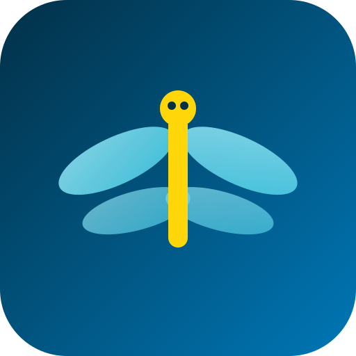

DragunflyFinding your location…
Point your phone flat and turn toward your drone.
Start a livestream to YouTube from your drone's own app (DJI Fly, Autel Explorer, etc. — set it to Unlisted, not Public), then paste the link here. Dragunfly overlays nearby creatures right on your live video.
Positioning uses your phone's compass, not real computer vision on the footage — it's an approximation, not pixel-perfect tracking.
When this is on, after a catch you can optionally snap a ground photo with your phone's camera. It's tagged with the GPS spot and saved only on this phone — nothing uploads automatically.
We don't have a data buyer lined up yet. If that ever changes, you'll see a separate, explicit prompt before anything of yours is shared or sold — this toggle alone never sends your photos anywhere.
Tap a tile on the map to select it.
Target altitude:
Dragunfly is a location game layered on top of your flight — it never controls your drone. You're always the one responsible for flying it legally and safely. Quick checklist before you take off: